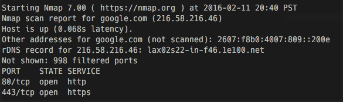

toko.dougherty@gmail.com
Penetration Testing With Kali Linux
Heralded as the industrial standard in penetration testing,Kali Linux serves as both a spring board for aspiring testers and veterans alike. I will be covering various penetration testing techinques utilizing Kali Linux and its software tools.
Nmap
A staple for anyone concerned with networking, Nmap, conceived in 1997, has been the go to tool for network scanning for 18 years. Nmap can be used in its own right, however, using Nmap in conjunction with other tools such as metasploit or sqlmap can be powerful. Mastering Nmap provides a base of information on which to build on.
The Basic Scan
- Start by running Nmap without any commands. You should get an output similar to this, this is Nmap outputting arguments and options when it comes to running Nmap from the command line.
Next let's scan an IP address. We can tell that we first put our scan types and options then the actual target. Leaving the scan types and options blank will give us a basic scan of our target so let's start with that. First "nmap", then follow that with your target's ip or web address. In this case google.com will be our target.
nmap google.comParsing the data Nmap has given us, we can tell a couple of things about the server that is hosting google.com:
- The ipv4 and ipv6 address of google.com
- The ports that are open on the server, 80 and 443, standard on any webserver. Every other port is filtered, meaning there was no response from the server on that port.
- Although data like this may not seem useful, this is just the tip of the iceberg when its comes to Nmap and its usage. Scanning with scripts to look for running services or detecting the running OS and other details can prove to be valuable information.
Mobile Exploitation with Kali Net Hunter
An adaption of the Kali Linux platform to android phones and tablets, Kali NetHunter supports many of the common tools of Kali Linux such as Metasploit, MITM attacks, MANA Evil Acess Point. NetHunter also features tools exclusive to the NetHunter platform, such as HID keyboard attacks, BadUSB, and USB booting (via DriveDroid).
The HID Attack
An HID or human interface device is a device that takes direct input from a user. All usb keyboards and mice follow that follow the HID standard are compatible with all mainstream operating systems, presenting an interesting attack vector for pen testers.
Video Examples
iasjfdlasjfklasdjfiasjfdlasjfklasdjfiasjfdlasjfklasdjfiasjfdlasjfklasdjfiasjfdlasjfklasdjfiasjfdlasjfklasdjfiasjfdlasjfklasdjfiasjfdlasjfklasdjfiasjfdlasjfklasdjfiasjfdlasjfklasdjfiasjfdlasjfklasdjfiasjfdlasjfklasdjfiasjfdlasjfklasdjfiasjfdlasjfklasdjfiasjfdlasjfklasdjfiasjfdlasjfklasdjfiasjfdlasjfklasdjfiasjfdlasjfklasdjfiasjfdlasjfklasdjfiasjfdlasjfklasdjfiasjfdlasjfklasdjfiasjfdlasjfklasdjfiasjfdlasjfklasdjfiasjfdlasjfklasdjfiasjfdlasjfklasdjfiasjfdlasjfklasdjf